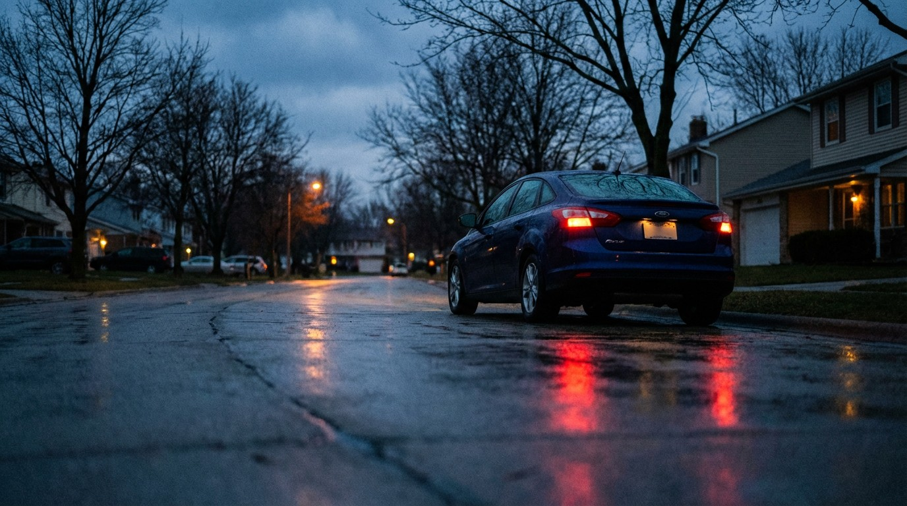

The Ford Focus Was America’s Most Popular First Car. It Killed 3,046 People.

Before you sign that lease, you might want to see this.
The Ford Focus was the car you bought when you didn’t know what to buy. It was the default. The safe choice. The car your parents said was “practical.” For two decades, it was one of the best-selling compacts in America — a fixture in college parking lots, apartment complexes, and used-car lots from coast to coast.
It also killed 3,046 people in a decade.
At 2.52 deaths per 100 million vehicle miles traveled, the Focus was deadlier per mile than every one of its direct competitors. The Honda Civic? 2.25. The Toyota Corolla? 1.85. The Hyundai Elantra? 1.50 — literally 40% safer per mile. Even the Nissan Sentra, nobody’s idea of a safety champion, came in at 2.13.
The Focus wasn’t just a little worse. It was the worst compact sedan in the FARS database.
The model year data tells the rest of the story. The deadliest Focus years were 2005 (277 deaths) and 2007 (298 deaths) — model years built on the aging first-generation platform before the 2012 redesign. Ford sold over a million units of those early Focuses, and the data shows what happened when a lightweight compact without modern crash structures met American highways at scale.
The 19.4% impairment rate is actually below the database average. This isn’t a drunk-driving story. This is a vehicle-design story. Nearly 4 out of 5 fatal Focus crashes involved sober drivers.
Ford knew the Focus had problems. The 2012 redesign with its PowerShift dual-clutch transmission introduced its own issues — class-action lawsuits, lemon-law claims, shuddering transmissions that could leave you stranded in an intersection. But at least the crash numbers improved: the 2018 model year logged just 65 deaths compared to the 2007’s 298.
Ford discontinued the Focus in 2018. The last ones rolled off the line in May 2018 as Ford pivoted hard toward trucks and SUVs. But there are still an estimated 1,050,000 Focuses on American roads, and the deadliest model years — 2005 through 2008 — are still out there, still cheap, still showing up as “great deals” on Facebook Marketplace.
If you’re shopping for a used compact under $8,000, the data is clear: the Elantra will get you home 40% more often. The Corolla, 27% more often. Even the Civic — with its own body count — is meaningfully safer per mile.
The Focus was practical, affordable, and everywhere. The FARS data suggests “everywhere” included a lot of morgues.
AI-generated editorial analysis of NHTSA FARS public data. See Methodology for caveats.